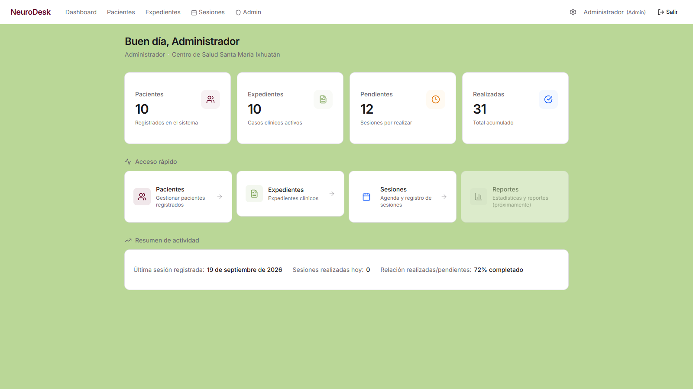
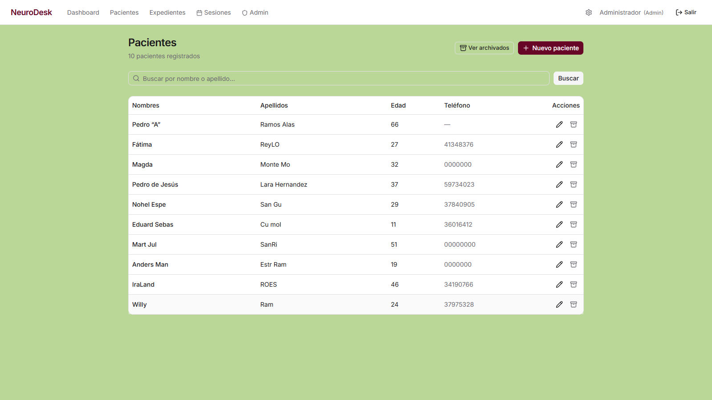
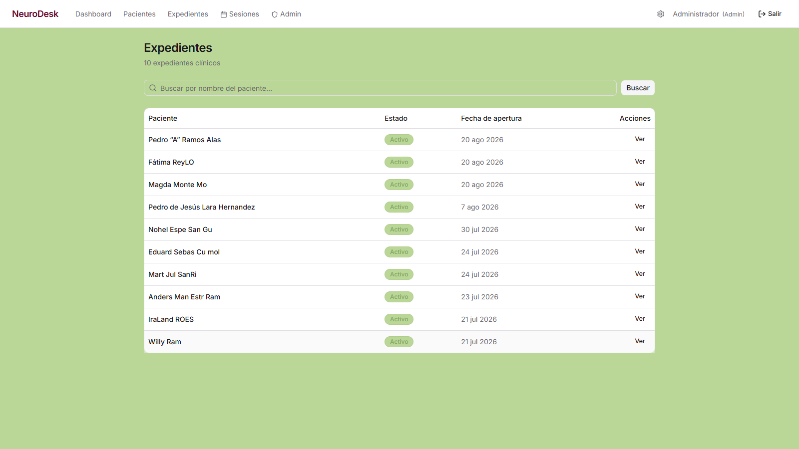
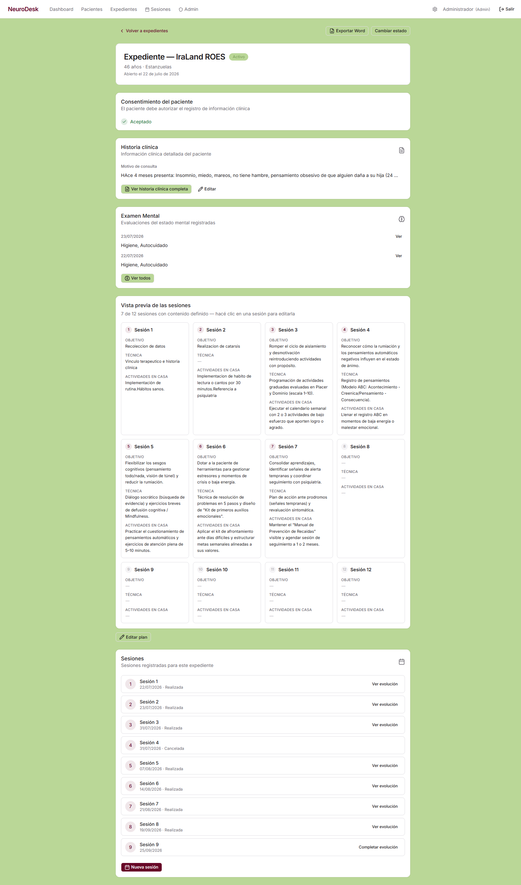
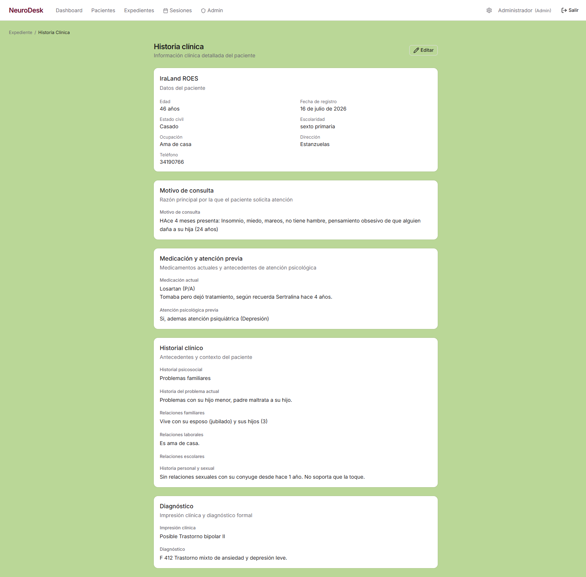
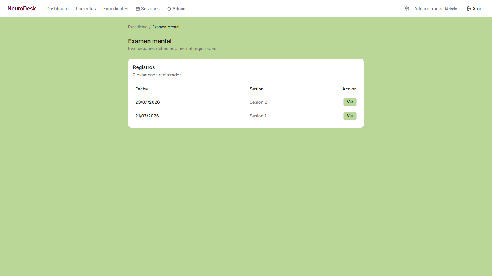
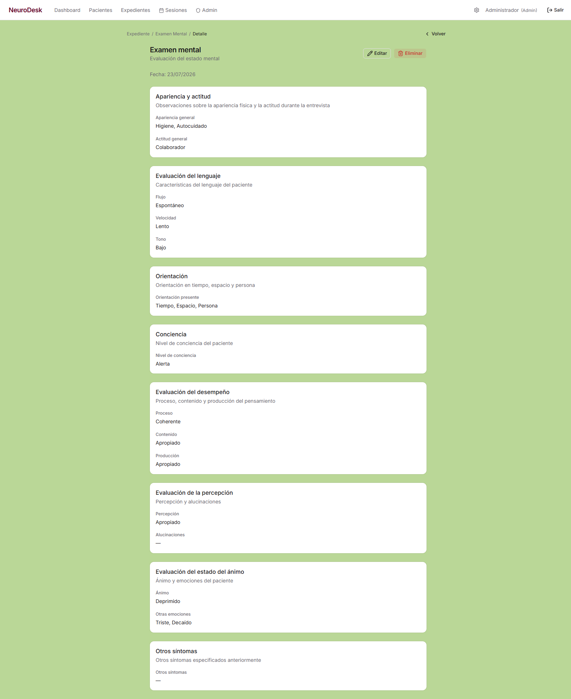
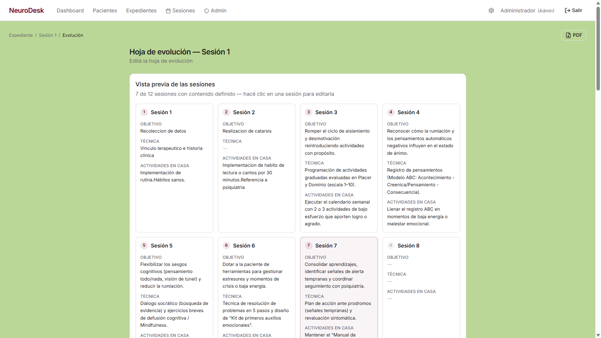
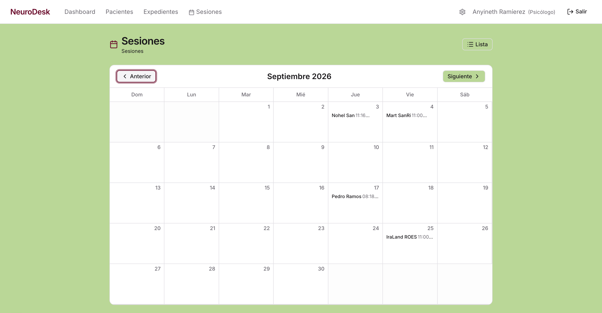

Dashboard
dashboard
Panel de inicio del centro de salud: resumen de pacientes, expedientes clínicos, sesiones pendientes y realizadas, con acceso rápido a cada área.
Recorrido en video
Captura de pantalla

Recorrido de módulos con captura de pantalla y video. Generado el 10 de noviembre de 2026.
dashboard
Panel de inicio del centro de salud: resumen de pacientes, expedientes clínicos, sesiones pendientes y realizadas, con acceso rápido a cada área.

pacientes
Listado de pacientes del sistema: nombre, edad, teléfono y acciones para editar o dar de baja cada uno.

expedientes
Listado de expedientes clínicos activos con paciente, estado y fecha de apertura.

expedientes/cmrvl13wq000104l5w5vmed2h
Expediente completo del paciente: consentimiento, historia clínica, examen mental, plan de tratamiento y registro de sesiones.

expedientes/cmrvl13wq000104l5w5vmed2h/historia-clinica
Historia clínica detallada del paciente: motivo de consulta, medicación, antecedentes psicosociales y diagnóstico.

expedientes/cmrvl13wq000104l5w5vmed2h/examen-mental
Evaluaciones del estado mental registradas: apariencia, actitud, lenguaje, orientación, conciencia, desempeño, percepción y ánimo.

expedientes/cmrvl13wq000104l5w5vmed2h/examen-mental/cmrxtom23000004l9bbub2qa6
Detalle de una evaluación del estado mental: apariencia y actitud, evaluación del lenguaje, orientación, conciencia, desempeño, percepción, ánimo y otros síntomas.

expedientes/cmrvl13wq000104l5w5vmed2h/sesiones/cmrvl8r2o000004l2gomshl2r/evolucion
Hoja de evolución de una sesión: vista previa de las 12 sesiones del expediente y evolución registrada por fecha.

expedientes/cmrvl13wq000104l5w5vmed2h/sesiones
Listado de sesiones del expediente con navegación por meses. Permite regresar hasta agosto para mostrar el historial completo de seguimiento del paciente.
